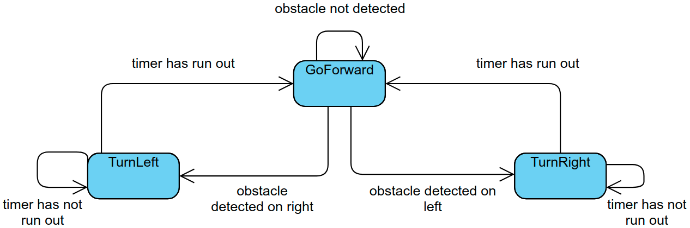

FSM and state classes
I made a kind of "framework" that allows me to better separate the implementations of different states and to quickly scalate to more states. An explanation of this can be found here.
First approach
First I decided to use the bumper, and came with the following FSM:
The timers are chosen randomly, and varying the range you can obtain different results. For example, at first I thought that the best way to do it was to set short timers, so that the robot would stick to the walls. There were two problems: First, the robot would get stuck in the corners. Another problem was that when it entered a room, it could not get out. The following video shows the second problem:
At that same time I realised that the methods to access the bumper state were giving me problems, so I started using the laser. Since there was no physical contact anymore, the GoBackward state was no longer needed, so I removed it:
I also put larger ranges for the timers, and changed the probability distribution, slightly favoring smaller timers(i.e. smaller turns) to favor the current direction of movement, without losing the possibility of making bigger turns.
By that time, I also added the DoSpiral state:
DoSpiral activates with a certain probability, currently at 1%.